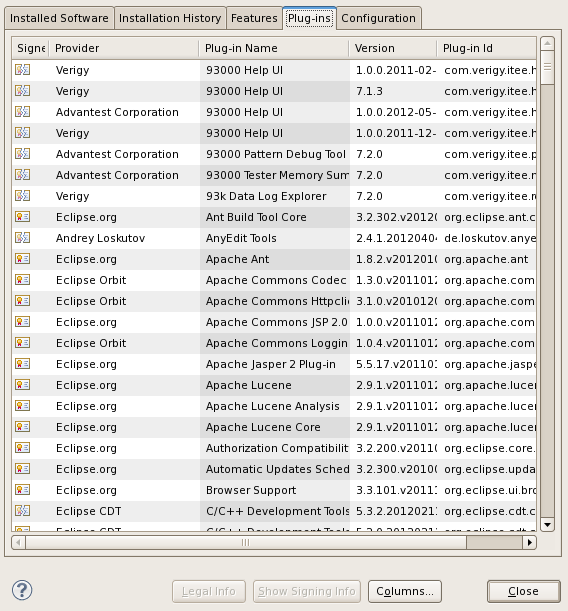
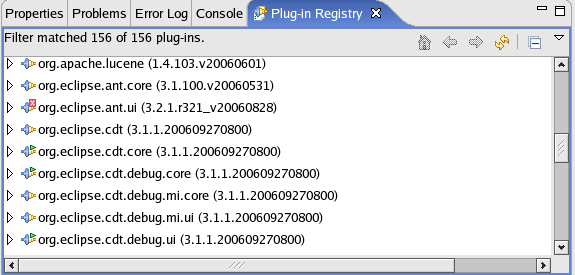

Checking for installed plug-ins
Check which plug-ins are installed and if a plug-in was installed successfully.
Procedures
Which plug-ins are installed?
- On the menu, click .
The About SmarTest Work Center window opens.

- In the window, click Installation Details.
The SmarTest Eclipse Work Center Installation Details window opens.
- Click the Plug-ins tab to see all plug-in details, including plug-in
name, plug-in identifier, provider, and version.

Check installation status
- Open the Plug-in Registry view. (See Opening a
view.)
In this view, all plug-ins are displayed. In the example shown below the third line is marked with an error symbol. This means the plug-in was not installed successfully.

- In the Plug-in Registry view, you can:
- Check for the file location and other details: Click the icon at the beginning of the line. The file location and other details are displayed in a tree structure.
- Get more information: Right-click the line and select Go into. This hides all other entries. To show all other entries again, click the button.
What to do next
Functional changes
- Introduced before SmarTest 6.3.2
- SmarTest 7.0.1: The procedure of checking for installed plug-ins has been changed.